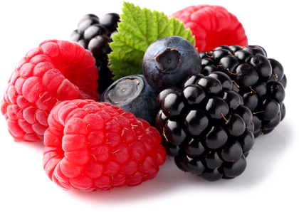

اليوم سوف أحكي لكم قصتي مع الدوالي أنا و زوجتي و كيف تخلصنا منها بسهولة و بدون الإستعانة بالمتخصصين
كانت الدوالي حاضرة في حياتي وحياة زوجتي لسنوات عديدة، وكانت هذه التجربة تحمل معها الكثير من التحديات والمعاناة. من الإرهاق اليومي إلى الآلام الشديدة، كانت الدوالي تؤثر بشكل كبير على صحتنا ونوعية حياتنا.
لقد كنت أعاني من آلام في الساقين بشكل مستمر، مما جعل يومياتي صعبة. كانت آلام الدوالي تمنعني من القيام بالأنشطة التي كنت أحبها، وتقلل من طاقتي وحيويتي. ولكن الأمر لم يكن محدوداً بمعاناتي فحسب، بل كانت زوجتي تشعر بنفس الألم والإرهاق.
رغم أن الدوالي قد تظهر بسبب عدة عوامل، إلا أن التأثير على الأوعية الدموية كان واضحًا. بالإضافة إلى الجوانب الجمالية المؤثرة على مظهر الساقين، كانت لدينا قلقاً حقيقياً بشأن تأثيرها الصحي. كنا نعلم أن هناك حاجة ماسة للبحث عن حلاً فعّالاً.
دعوني أولاً احكي لكم لماذا الأوعية النظيفة هي أساس الصحة لأنني ببساطة قرأت عن الموضوع في أكير من مكان و عرفت الكثير عنه :
إن الموضوع بسيط. يعتمد عمل وأداء الأعضاء والأجهزة داخل الجسم على جودة الدورة الدموية. وتعني الدورة الدموية إيصال ونقل الأكسجين والمواد الغذائية إلى الأعضاء الداخلية بالإضافة إلى جمع ثاني أكسيد الكربون والإفرازات الأيضية. في الطفولة، والمراهقة والشباب، نتحرك أكثر، وتكون الأوعية بحالها فضلاً عن مرونتها ونظافتها – وتحصل الأعضاء على أقصى قدر من التغذية. ومع التقدم في السن، تصبح حركتنا أقل وتبدأ بعض الرواسب في الظهور داخل أوعيتنا. ويرجع هذا إلى العديد من العوامل، (مثل التدخين، والأكل غير الصحي، والبيئة السيئة، وأنماط الحياة )، لكن هناك بعض العوامل الطبيعية (تراكم وترسب الدهون، وهي العملية التي تحدث في جميع الكائنات الحية).
ما الذي يعنيه "اتساخ" الأوعية الدموية؟
تخيل بعض الأنابيب المليئة بالصدأ. ما الذي سيحدث؟ يزداد ضغط الماء، ويصبح طعم الماء سيئاً. يحدث الشيء ذاته مع الأوعية الدموية. عندما يترسب الكولسترول أو المواد الأخرى فيها، يزداد الضغط ( تعتبر الأوعية المتسخة هي السبب الرئيس في ارتفاع ضغط الدم! )، يحتوي الدم على شوائب، والدورة الدموية متقطعة وغير منتظمة. ونتيجة لذلك تحدث التغييرات في كل أعضاء وأجهزة الجسم. حتى الجلد يعتبر جهاز بالجسم .
بمرور الوقت يهرم جسم الإنسان. وإذا كنت حريصاً وقمت بتنظيف أوعيتك الدموية، فأمامك الفرصة في ان تتخلص من مشاكل الأوعية الدموية الملوثة دون أن تشعر بألم في الأعضاء أو ألم في المفاصل وسيعمل الجسم بشكل ممتاز. بمعنى آخر، يمكن لتنظيف الأوعية الدموية أن يخلصك من جميع معاناتك المتصلة بالضغط و المشاكل القلب و الأوعية الدموية وهذه ليست مجرد نظرية. إنما اطبقها بصورة شخصية. تجاوز كل مَنْ استمعوا إلى نصيحتي هذه المشاكل بسهولة و يسر .
هذه بعض المشاكل التي يمكن حدوثها نتيجة تلوث الأوعية الدموية :
الدوالي : إنسداد الاوعية الدموية يؤدي إلى إنسداد العروق و الشرايين بمواد ملوثة و هذا ما يؤدي إلى اختناق الأوردة و نتيجة لذلك ظهور الدوالي في أنحاء الجسم
تصلب الشرايين : تتوقف الأوعية عن أداء وظائفها على النحو الأمثل: وتصبح الأوعية الصغيرة مسدودة تماماً، وتحتوي الأوعية الرئيسة على نسبة عالية من رواسب الكوليسترول.
القلب الإقفاري : ينتج عن نقص الدم بصورة منتظمة في الأوعية التاجية، والذي يتطور بدوره بسبب الشوائب الموجودة في الأوعية
السكتة الدماغية: يتسبب ضعف إمداد الدم إلى النسيج الدماغي إلى موت النهايات العصبية مما يؤدي إلى فقدان بعض الوظائف
ارتفاع ضغط الدم: تتسبب الشوائب الموجودة في الأوعية الدموية في تضييق التجويف وارتفاع ضغط الدم
توسع الأوردة : ظهر داخل الجسم، وليس فقط على الساقين (وهو أمر يُنذر بالخطر بالنسبة للنساء). والبواسير هي نتيجة للتوسع الوريدي أيضاً
التخثر أو التجلط الوريد والشرياني : شكل رواسب الشوائب الموجودة في الأوعية الدموية الجلطات وتؤدي إلى موت الأوعية الدموية، مما قد يؤدي إلى موت مجموعة من الخلايا في الجسم . وإذا لم يتم إزالة التجلط وبالتالي دخوله إلى مجرى الدم، قد يحدث انسداد في الأوعية الدموية الموجودة داخل القلب، السكتة القلبية، والتي يتبعها عادةً مشاكل أكبر بكثير بعد ذلك (لا قدر الله).
قررت أن نلجأ إلى طريقة طبيعية باستخدام مكمل غذائي مصنوع من مكونات طبيعية مثل الكستناء، التوت، الكركم، الزنجبيل، نبات الزعرور، واللوز. بدأنا في تناول هذا المكمل الغذائي بانتظام، وكانت النتائج مدهشة.
هنا سأوضح لكم ما هي فوائد كل مكون من هذه المكونات :
-
الكستناء :

تتميز الكستناء بإحتوائها على العديد من العناصر الغذائية المفيدة جدًا مثل: البوتاسيوم والكالسيوم والعديد من الفيتامينات منها فيتامين ج وفيتامين ب وحمض الفوليك، وهي غنية بالمعادن المختلفة والدهون الغير مشبعة والمفيدة، ممّا يجعل لها دور كبير في وقاية الجسم من العديد من المشاكل الصحية . -
التوت :

مضادات الأكسدة الموجودة في التوت تعزز تدفق الدم في الاوردة و الشرايين . هذا يمكن أن يساعد في تحسين توسيع الأوعية الدموية وتحسين تدفق الدم في الأوعية. -
كركم :

يساهم في تحسين وظيفة الأوعية الدموية عن طريق تعزيز تدفق الدم وتوسيع الأوعية الدموية و خفض ضغط الدم و تحسين مستوى الكوليسترول . -
الزنجبيل :

الزنجبيل يحتوي على مركبات مضادة للالتهابات ومضادة للأكسدة، وهذه المركبات قد تساعد في تحسين تدفق الدم وتقليل التورم. بالإضافة إلى ذلك، الزنجبيل يمكن أن يساهم في تحسين صحة الأوعية الدموية بشكل عام. -
نبات الزعرور
:

يساعد في تحسين وظائف القلب و تحسين مستوى الاكسجين في الجسم و وتقليل مخاطر ظهور الدوالي و يساعد في توسيع الأوردة . -
اللوز :

اللوز غنية بالدهون الصحية مثل الدهون غير المشبعة والأحماض الدهنية أوميجا-3. هذه الدهون يمكن أن تساعد في زيادة مستويات الكوليسترول الجيد (HDL) في الدم، مما يقلل من تراكم الدهون في الأوعية الدموية ويحسن من صحتها.
بعد قراءتي عن فوائد هذه المكونات قررت ان أبحث عن منتج قوي يحتوي على هذه المكونات و لم أجد سوى المنتج الأول في الجزائر بلا منازع CardioFort
لسوء الحظ، أعرف عن مشاكل الدوالي نتيجة تجربة شخصية. قبل بضع سنوات، تسبب لي هذه المشكلة في الإحراج دائماً من الظهور أمام الناس
لذلك قررت شراء المكمل الغذائي CardioFort بسرعة!

كانت عملية الشراء سهلة و سلسة جداً خصوصاً ان طلب المنتج عن طريق الإنترنت و ليس صعباً تماماً و أيضاً الدفع عن الإستلام حتى باب المنزل
بدأت في إستخدام المنتج أنا و زوجتي بشكل عام، كان هذا المكمل الغذائي الطبيعي مفتاحًا لتغيير حياتنا. بدأت آلام الدوالي في التلاشي، وشعرنا بتحسن ملموس في طاقتنا وحيويتنا. لقد كنا قادرين على الاستمتاع بالأنشطة التي كنا نفتقدها من قبل، وشعرنا بتحسن كبير في صحتنا بشكل عام.
بدأنا نلاحظ زيادة في مستويات الطاقة والنشاط، مما سمح لنا بالمشاركة بشكل أكبر في الأنشطة الاجتماعية والرياضية. كما تحسنت نوعية نومنا، حيث كنا نعاني سابقًا من اضطرابات نوم بسبب الآلام والتوتر الناتج عن مشكلة الدوالي.
تأثير هذا المكمل الغذائي كان بالغ الأهمية أيضًا على الصحة النفسية. بدأنا نشعر بالراحة والسعادة، حيث انخرطنا في حياة نشيطة ومفعمة بالحيوية. كما زادت رغبتنا في الاستكشاف وتجربة أشياء جديدة، حيث كنا قبل ذلك مقيدين بتقليل النشاط بسبب الآلام.
لا يمكن التأكيد بمدى أهمية استخدام المكملات الغذائية الطبيعية المكونة من مثل هذه المكونات الفعّالة في تحسين صحة الأوعية الدموية والتغلب على مشكلة الدوالي. الكمالية في تركيبة هذا المكمل الغذائي تعكس توازنًا فريدًا من العناصر الطبيعية التي تعمل بتناغم لتحسين تدفق الدم وتقوية الأوعية الدموية.
باستخدام هذا المكمل الغذائي الطبيعي، تمكنا من التغلب على مشكلة الدوالي بشكل فعال وبدون اللجوء إلى الحلول الطبية التقليدية. يعتبر هذا التجربة إشارة إلى أهمية استخدام المكملات الطبيعية في تحسين الصحة العامة والتغلب على المشاكل الصحية بشكل طبيعي وفعّال.
كيفاش تقدر تطلب منتج ؟
لشراء المنتج في الجزائر لديكم طريقة وحيدة لشرائه عن طريق الشركة المصنعة مباشرةً و الأمر سهل كل ما عليكم هو ملئ نموذج الطلب الرسمي بالأسفل و بعد ذلك سوف يتم التواصل معكم عن طريق مختص من الشركة المصنعة لتأكيد طلبكم و تاكيد عنوان التوصيل و الدفع عن الإستلام .
إنتباه! هناك تخفيض الأن بنسبة 50% عند شرائك دورة CardioFort في الجزائر !
نموذج الطلب الرسمي
أدخل إسمك و رقم هاتفك هنا للطلب
السعر قبل التخفيض : 17000 DZD
السعر بعد التخفيض : 5999 DZD
عند شرائك دورة CardioFort